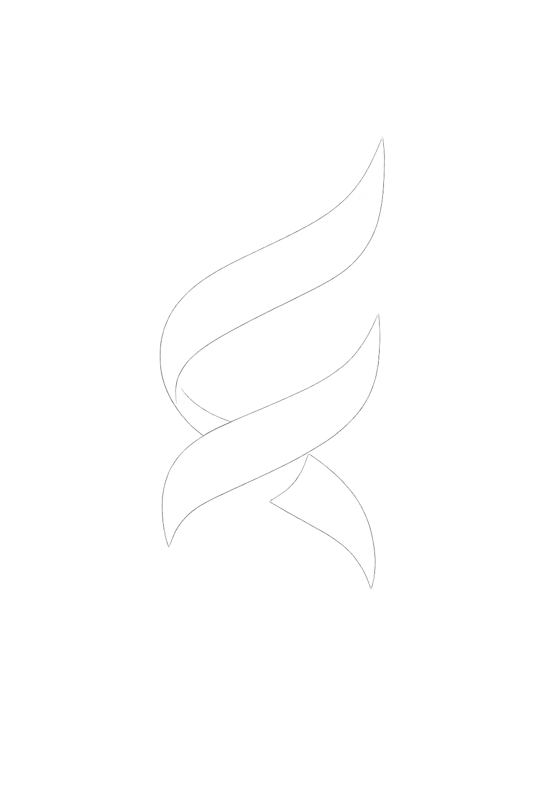
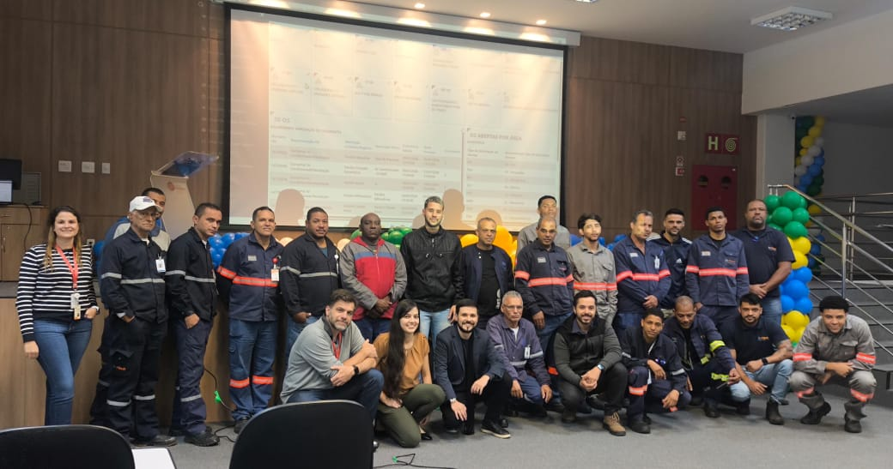
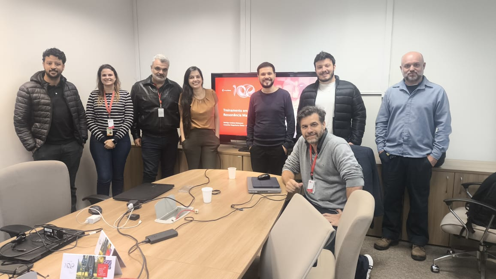
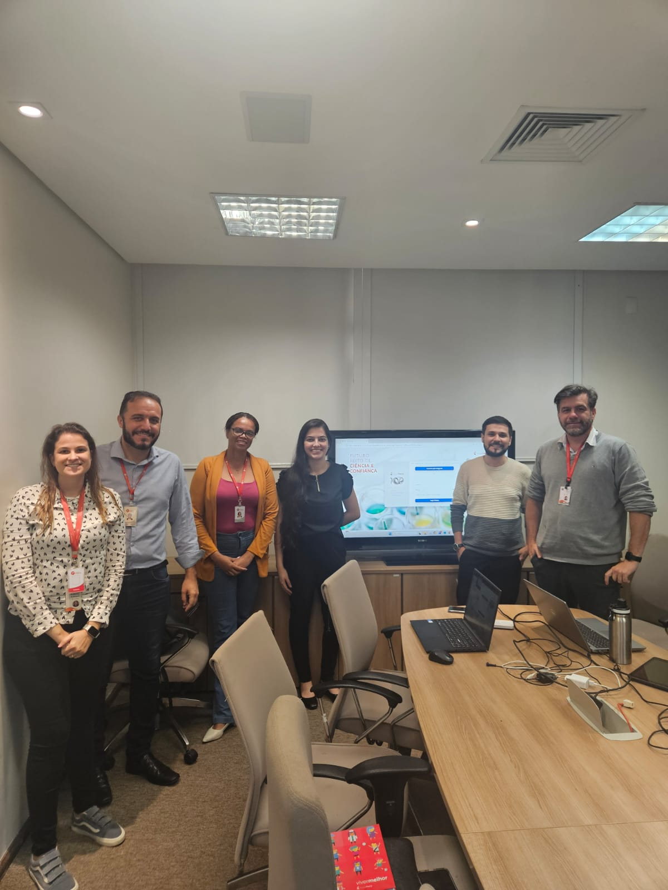
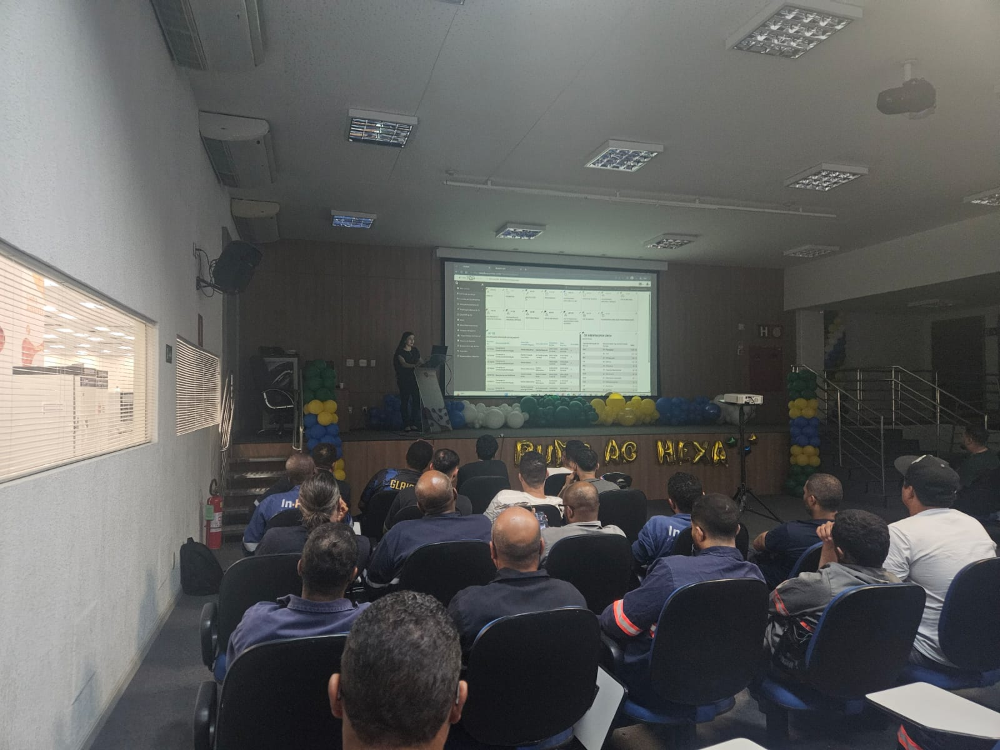
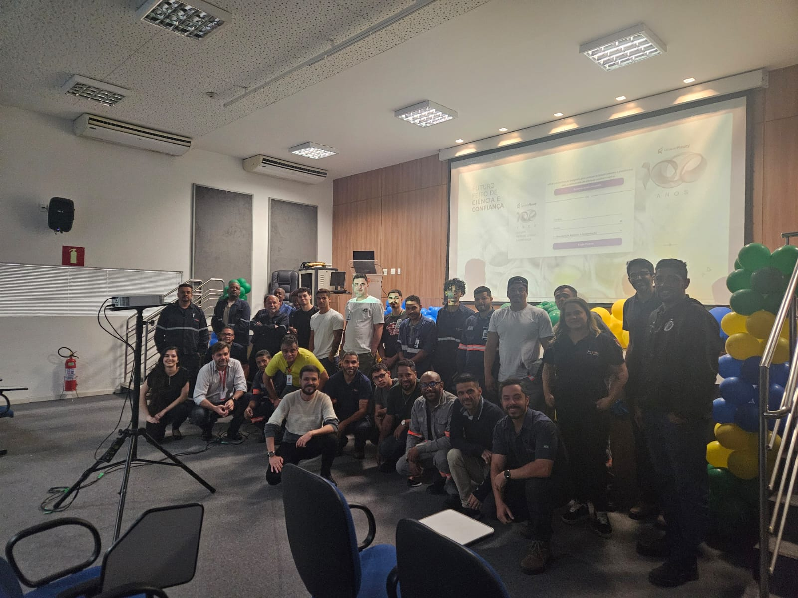
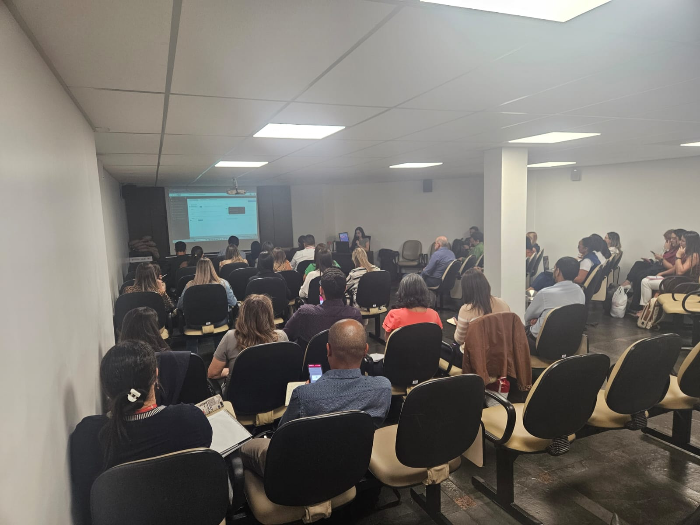
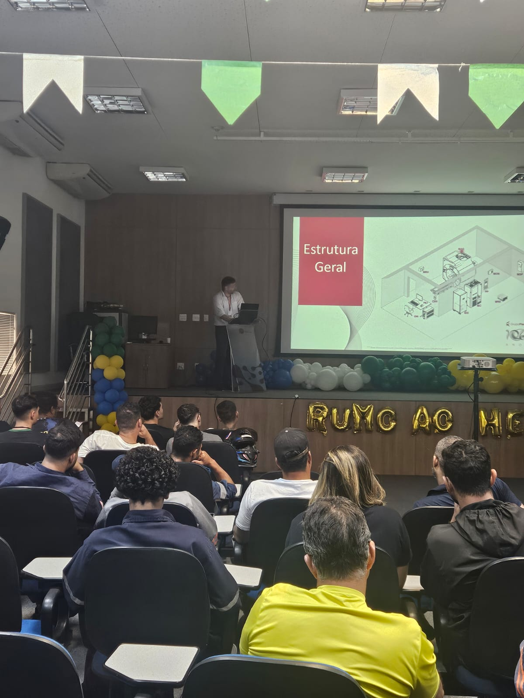
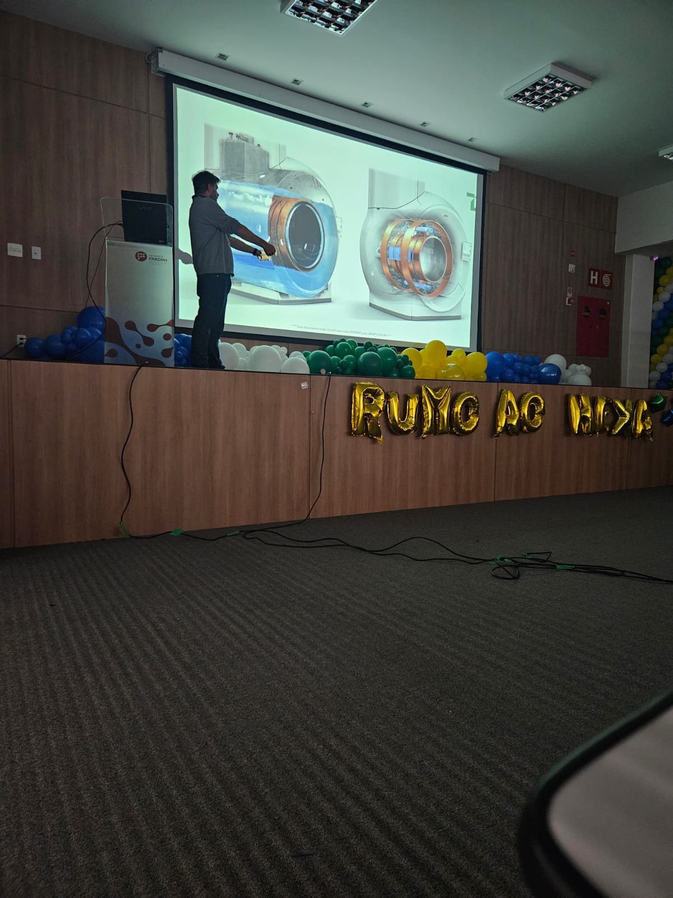
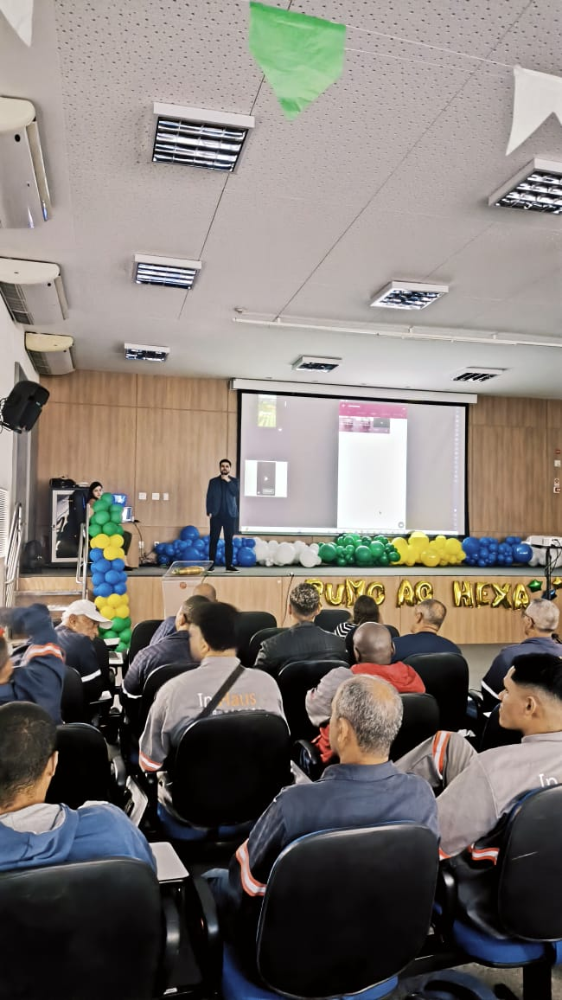

Grupo Fleury








Este painel mostra o panorama geral. Na análise detalhada a gente aproveita ao máximo os dados brutos do quiz — cruzando tempo, acertos e dificuldade — para revelar o que a média sozinha esconde: